市场机会
年轻用户愿意与 AI 角色进行低压力表达，尤其在情绪倾诉、陪伴幻想、剧情代入和角色养成场景中，具备更强的停留与复访动机。
AI COMPANION · VIRTUAL CHARACTER · STORY INTERACTION
围绕年轻用户的情绪陪伴、角色共创和剧情互动需求，构建从虚拟人创建、AI 聊天陪伴到剧情任务成长的完整移动端体验。
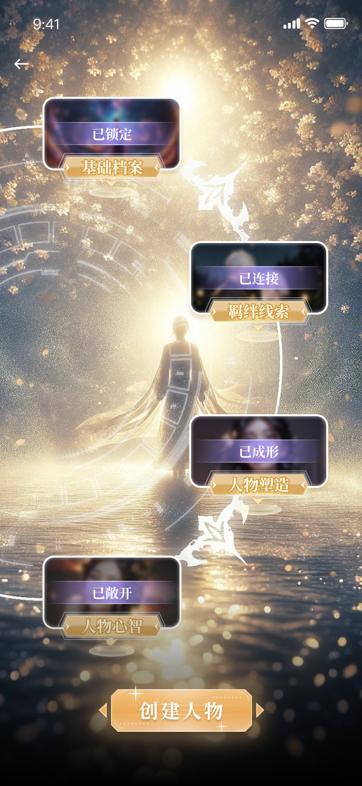
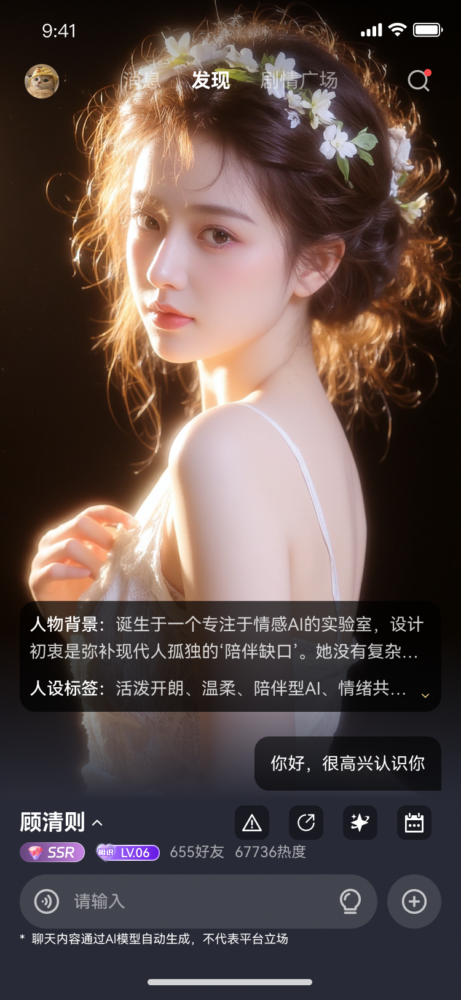
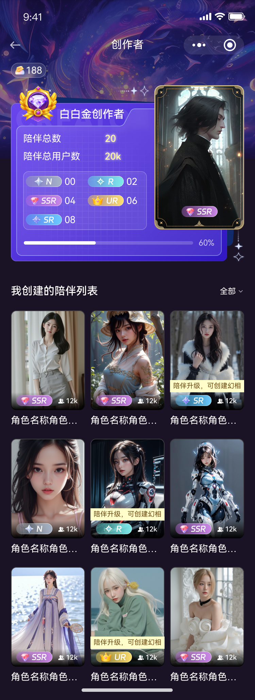
01 业务背景
生成式 AI 降低了虚拟角色的内容生产门槛，但单纯聊天容易出现新鲜感衰减、角色记忆弱、互动目标不清晰等问题。项目希望将“AI 对话”包装成更具情绪价值的陪伴产品，让用户能创建角色、理解角色、持续互动，并通过剧情和成长体系形成长期留存。
年轻用户愿意与 AI 角色进行低压力表达，尤其在情绪倾诉、陪伴幻想、剧情代入和角色养成场景中，具备更强的停留与复访动机。
如果只提供聊天输入框，用户很难理解角色差异和玩法目标。设计需要把“角色设定、关系进展、剧情任务”显性化。
以沉浸式视觉建立幻想感，以任务和等级建立进度感，以角色详情和知识库建立可信的人设感。
02 业务目标
业务目标不是让用户完成一次聊天，而是让用户理解产品能带来的陪伴价值，并在角色创建、剧情体验、亲密度成长中找到继续投入的理由。
降低虚拟人创建的理解成本，用分阶段任务替代一次性长表单，帮助用户顺利完成基础档案、羁绊、形象、声音等设定。
通过会话引导、主动推新、角色信息和快捷入口，减少“用户不知道聊什么”的冷启动问题。
用亲密度、陪伴等级、创作者等级、剧情任务和奖励反馈，构建可持续追求的成长闭环。
03 用户调研
基于目标用户场景做体验假设：用户在尝试 AI 陪伴时，一方面期待角色足够鲜活，另一方面也需要明确的安全感、可控感和互动目标。
“我想要一个能回应我情绪的人设，但也希望它有自己的故事、关系进度和互动目标。”
核心人群可概括为：喜欢角色扮演、乙女/剧情互动、AI 聊天、虚拟陪伴的年轻用户。她们愿意花时间塑造角色，但前提是过程足够沉浸、反馈足够及时、关系成长能被看见。
用户想定制角色，但长表单会降低耐心，需要明确进度和阶段反馈。
用户进入对话后常不知道从哪里开始，需要话题提示和角色引导。
如果缺少任务、奖励和关系进度，聊天会变成一次性尝鲜。
04 设计目标
设计目标围绕用户从首次进入到长期使用的关键阻力展开：先让用户愿意进入世界，再让用户能顺畅创建角色，最后让用户持续回到关系与剧情中。
通过暗色背景、光效、卡牌、幻想场景和高对比人物图，建立“进入另一个关系世界”的视觉心智。
把角色创建拆为基础档案、羁绊线索、人物塑造、声音设定、形象设定，让用户知道当前做什么、下一步去哪。
用等级、勋章、亲密度、任务完成、奖励弹窗、排行榜等机制，让互动投入具备可视化反馈。
05 页面展示
页面展示不按截图数量堆叠，而按用户任务分组：创建虚拟人、AI 陪伴聊天、剧情互动与成长体系。这样能让招聘方快速理解你的系统设计能力。
用仪式感节点承接角色生成过程，降低表单感，让用户在“解锁档案”的过程中完成角色设定。
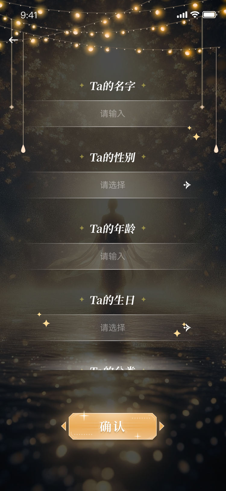
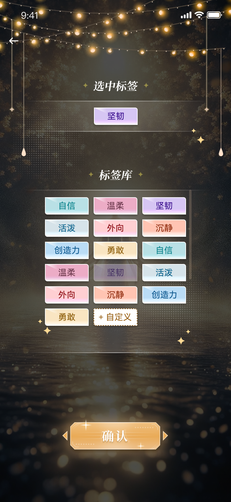
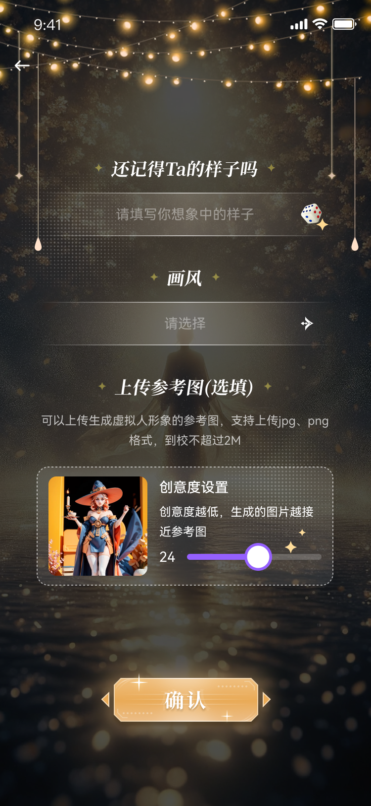
通过角色大图、人格标签、关系等级、会话引导和底部输入区，强化“正在与具体角色交流”的感受。
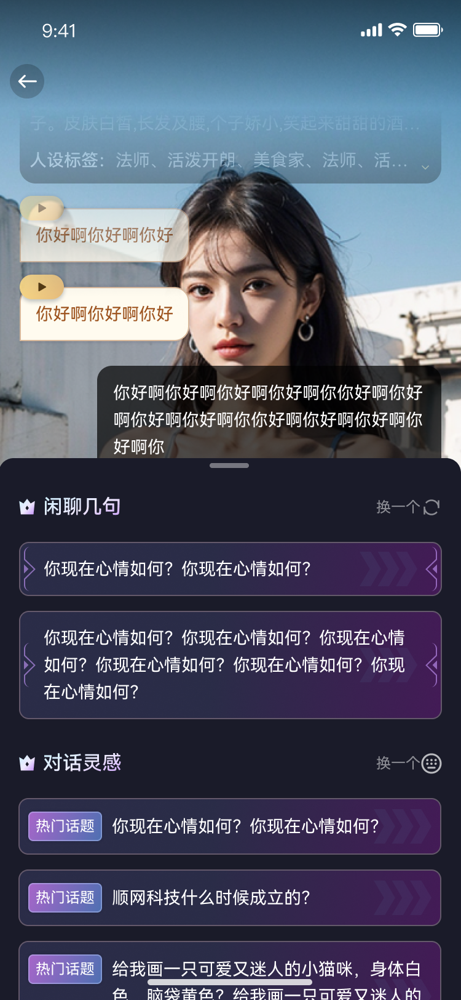
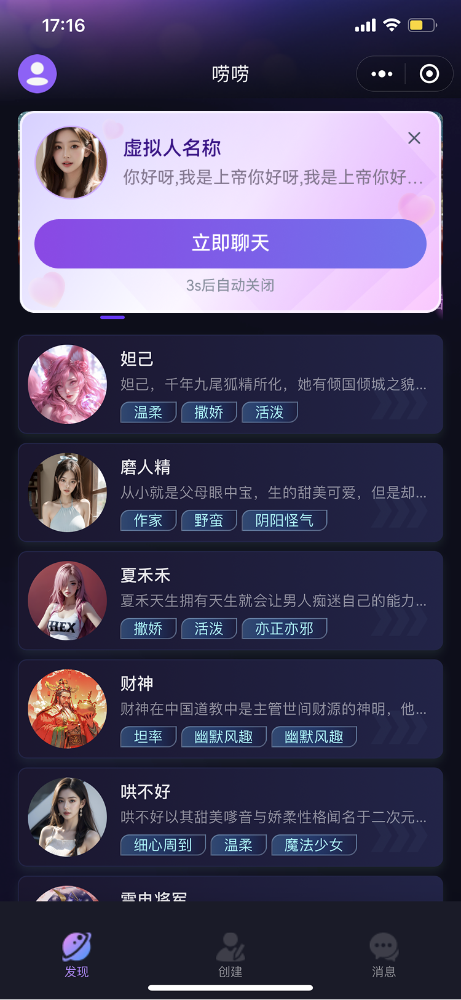
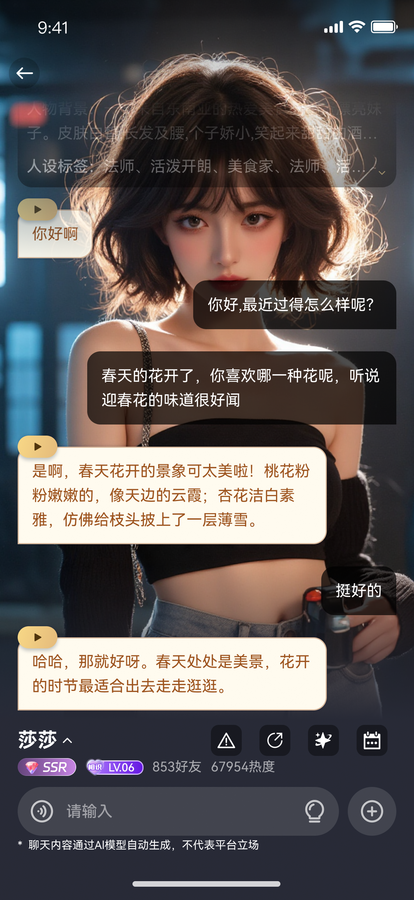
用剧情任务、线索解锁、通关反馈、亲密度与创作者等级，将聊天产品扩展成可持续运营的互动内容生态。
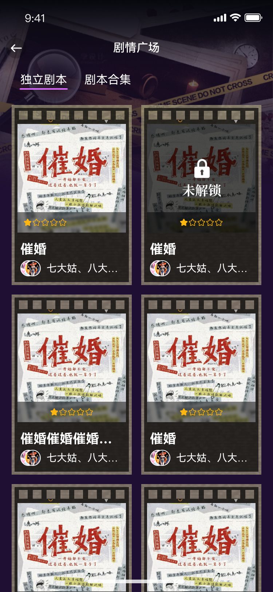
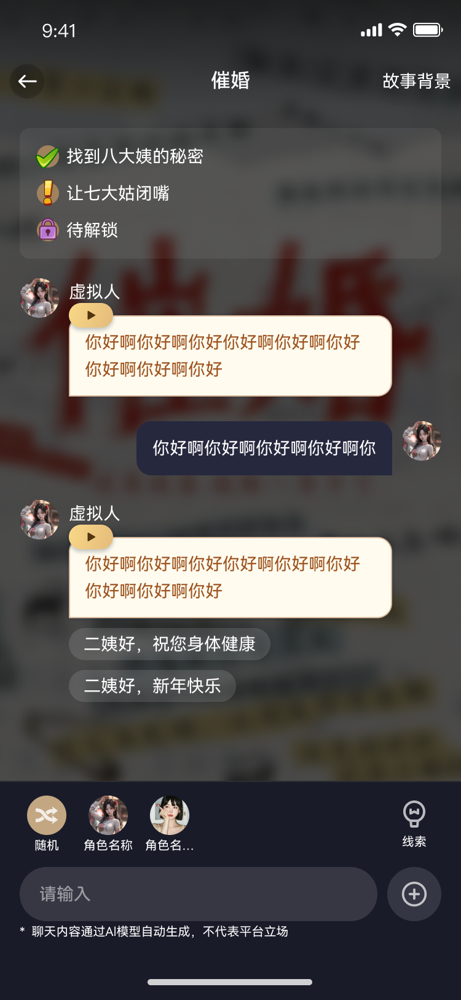
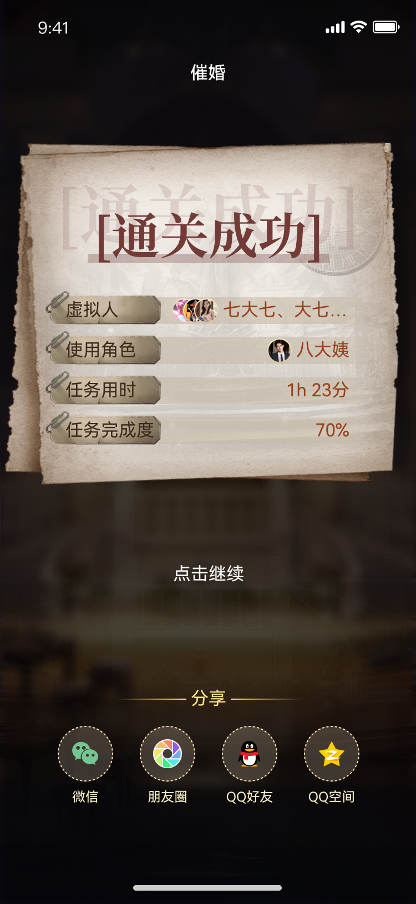
06 设计策略
设计策略分为两层：一层解决用户能不能快速理解和上手，另一层解决用户为什么愿意持续回来。
将创建表单转化为“基础档案、羁绊线索、人物塑造、人物心智”等阶段，使功能流程具备故事感和仪式感。
在聊天页前置人物背景、人设标签、关系等级与快捷操作，帮助用户理解角色边界并快速开启对话。
通过亲密等级、创作者等级、勋章、道具、任务完成和排行榜，让情绪陪伴具备明确进度和奖励预期。
07 数据指标提升
当前作品未提供真实上线数据，因此这里采用作品集常用的“目标指标与验证方式”表达。若后续有真实数据，可以直接替换右侧目标值。
说明：以上为设计验证指标模板，不作为真实上线数据陈述。面试前建议替换为真实项目数据、可用性测试结果或 A/B 测试记录。
08 总结
本项目将 AI 对话能力转译为更适合年轻用户的陪伴产品体验：通过幻想感视觉建立进入感，通过分阶段创建提升角色共创效率，通过聊天引导降低互动门槛，通过剧情任务和等级体系增强长期使用动机。作品集呈现重点不只是最终页面，而是展示我如何围绕业务目标、用户需求和可运营机制，搭建一套完整的移动端 UI 体验。
完成多模块移动端界面、复杂状态、弹窗、任务、等级、列表和聊天场景设计。
围绕用户冷启动、创建转化和留存问题，构建设计目标和体验闭环。
将大量页面整理为业务背景、目标、调研、策略、结果指标的完整案例。